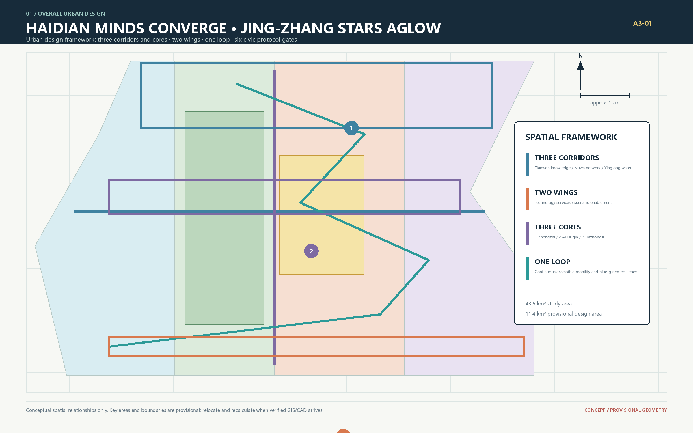

Interactive exhibition
Explore the bilingual visualization, layers, metrics and implementation logic.
Open visual/index.en.html →Using the Jing-Zhang railway heritage as a temporal framework and the AI belt as an urban network, the proposal connects innovation gateways, blue-green public space and resilient street interfaces.

Explore the bilingual visualization, layers, metrics and implementation logic.
Open visual/index.en.html →Complete professional boards for review and printing.
Download A0 boards →Drawings, narrative, standards and evidence in one verifiable package.
Download A3 booklet →